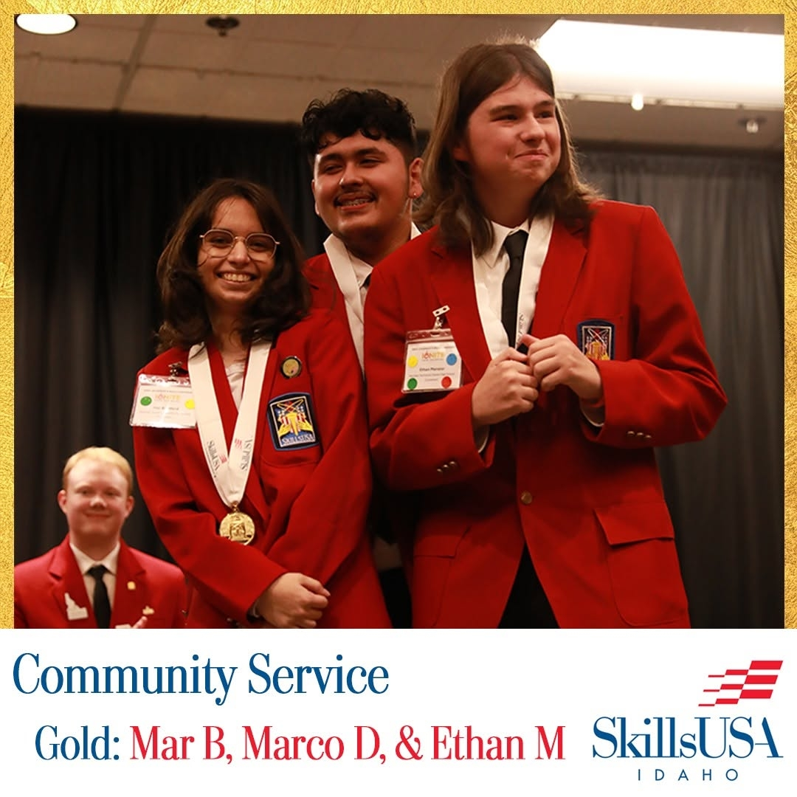
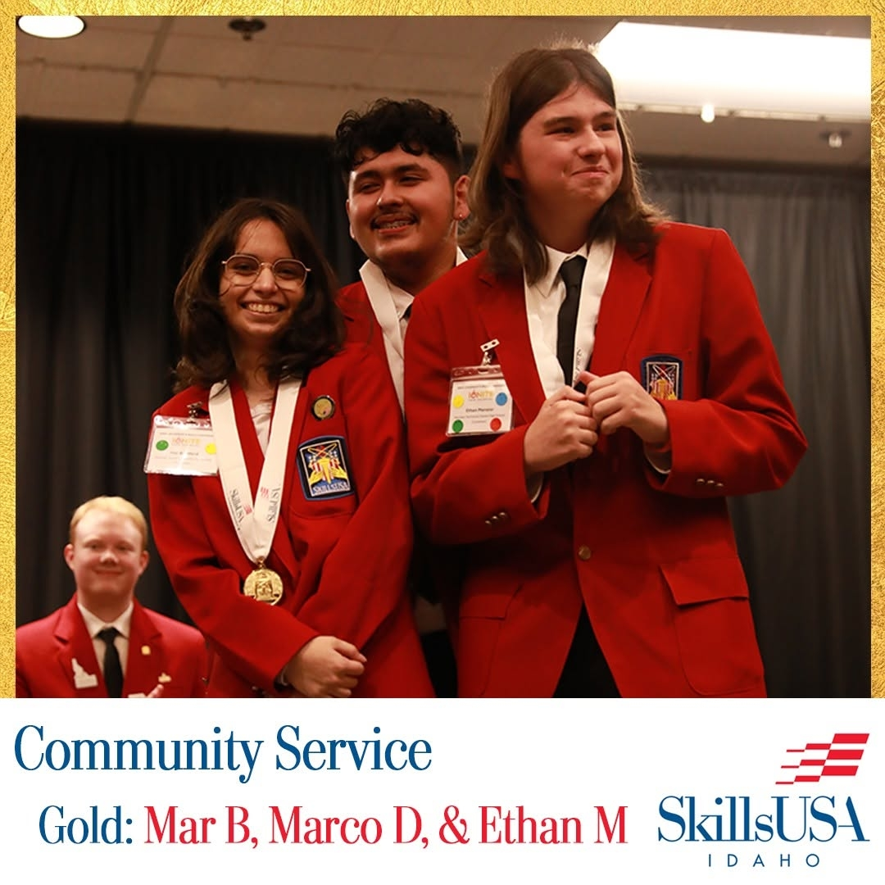

More About Me
Hey! I'm going to guess if you're reading this, you would like to know about me and my skills, which is great! For starters, I am a 17 year old junior studying at Meridian Technical Charter High School (MTCHS for short), in the Software Development Pathway. Ever since I was young, I was always infactuated by what made computers and games work, to the point where I would try to purposefully try to break a game and go out of bounds because I thought I could see the code that made it somewhere in there. I'm not sure where that reasoning came from, but I was young okay? Through years of coding bymyself or in special classes, I eventually ended up at MTCHS, where I could truly hone my skills. MTCHS pushed me to work at the best of my capibilities, and taught me many great things.
What I believe motivates me the most to continue coding would be seeing people having fun with the various games and projects that I've created. I also like to have a personal connection to each of my projects, and actually enjoy what I am making, with my favorite ways to code being using databases, Java, or in Unreal Engine. I also struggle with ADHD, anxiety, and pretty bad depression, which sometimes heavily impacts and inhibits my work ethic. Though, this has also taught me that it's okay to ask for help when I truly need it, which is an amazing skill to have in the workplace.
Outside of school, I like to play a lot of videogames, code some of my own personal projects, or collect figures from an old videogame series, Skylanders. I also like to get my creative juices flowing by doing some writing, which has taught me a lot of good organization techniques and how to use them properly - which even helps me in my school life. Speaking of school life, many of my peers at school have told me I am very kind, empathetic, show good leadership skills, and that I am overall a very fun person to be around. I was really able to hone my leadership skills down when I helped plan and run a 24 Hour Community Service Event for St. Luke's Children's Hospital, raising over $23,000. This event also led me to winning a gold medel for the Community Service Competition at SkillsUSA State Competitions in Idaho. If you would like to read more about the event, it is in the "Other Projects" section of my portfolio, which can be found below!
I believe that my programming skills, but also my social skills would be a great adition to any workplace. If you would like to see more about me, I have all of my major projects listed under this and have all of my certifications in a different tab! Thanks for reading!
 
